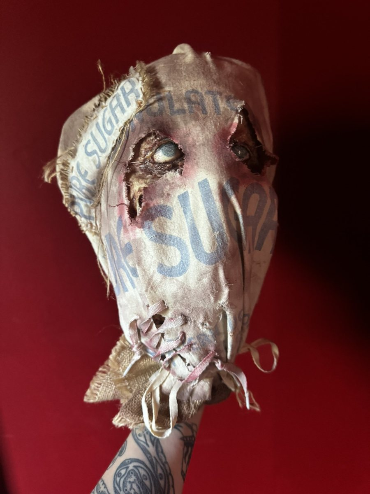
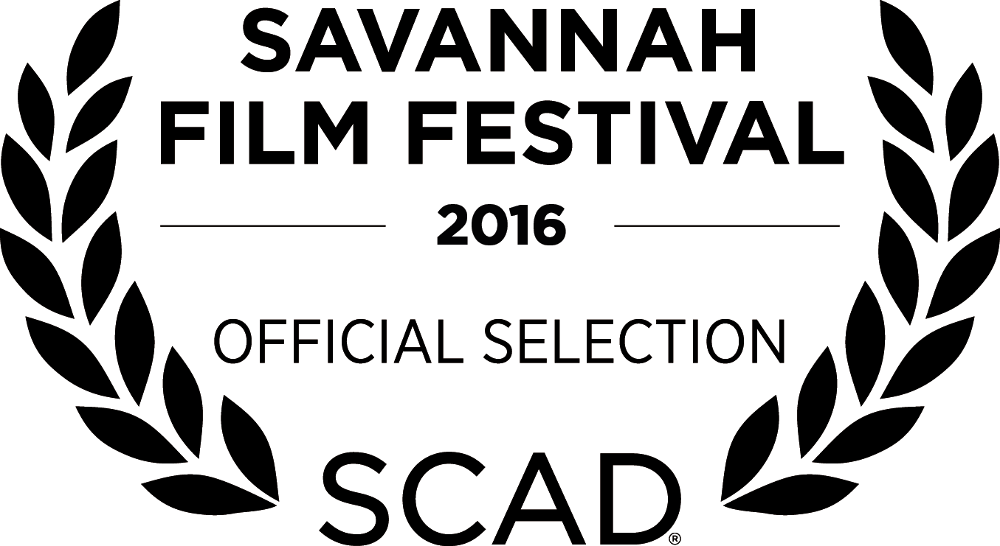
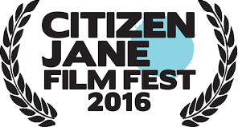
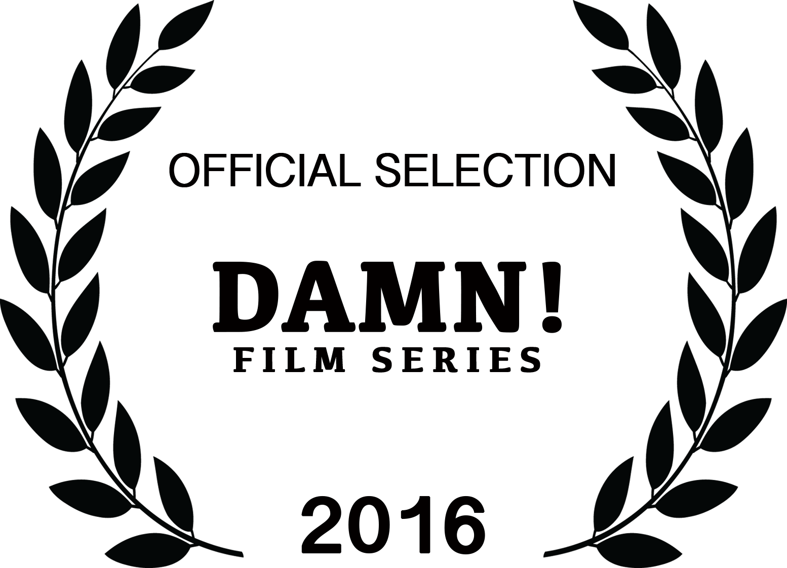

Filmography
Proud IATSE 478 member
BFA in Motion Picture Production from Wright State University (2017)
Film
- Goons (2024)Property Master · dir. Gerard McMurray · Confluential Films
- Average Joe (2024)Assistant Propmaster · dir. Harold Cronk · Pure Flix
- People We Meet on Vacation (2024)Property Buyer · New Orleans unit
- Chopin (2023)Property Master · dir. Vincent Lin · Valiant Pictures
- Faces of Death (2023)Additional Assistant Prop Master · dir. Daniel Goldhaber
- Hitman (2022)Assistant Propmaster · dir. Richard Linklater · Netflix
- Master Gardener (2022)Property Master · dir. Paul Schrader
- Fast Charlie (2022)Day Player Prop Assistant · dir. Phillip Noyce
- We Have a Ghost (2021)Prop Assistant · dir. Christopher Landon · Netflix
- Tall Girl 2 (2021)Prop Assistant · dir. Emily Ting · Netflix
- National Champions (2021)Day Player Prop Assistant · dir. Ric Roman Waugh
- All My Life (2019)Asset Coordinator · dir. Marc Meyers · Universal Pictures
- Greener Grass (2019)Set Dresser · dir. Jocelyn DeBoer & Dawn Luebbe · IFC Midnight
- American Factory (2019)Additional Assistant Editor · dir. Steven Bognar & Julia Reichert · NetflixWon Best Documentary Feature at the 2020 Academy Awards
- Beyond the Powder: The Legacy of the First Women's Cross-Country Air Race (2015)Production Assistant · documentary
Television
- Leverage: Redemption, seasons 2–3 (2024)Assistant Propmaster · Amazon Prime
- Parish, season 1 (2022)Day Player Prop Assistant · AMC
- Iron Mike, season 1 (2021)Assistant Propmaster · Hulu
- The Premise, season 1 (2021)Prop Assistant · Hulu
- NCIS: New Orleans, season 7 (2021)Prop Assistant · CBS
- Queen of the South, season 5 (2020–21)Propmaster (2 episodes), Props Buyer (8 episodes) · USA Network
- First Responders Live, season 1 (2019)Clearance Coordinator · 44 Blue Productions

Wright State University
- Adjunct Professor, Experimental Production (2018)Wrote the curriculum and taught undergraduates the history, philosophy, and making of experimental film. Demonstrated filming and editing equipment and led critiques.
- Video Editor, online course production (2016–17)Cut and assembled recorded lectures for online courses, added motion graphics and titles, and corrected sound and color.
Directed
- Lemonade (2016)Director · thesis film, Wright State University · Best Student Short, Festigious International Film Festival


